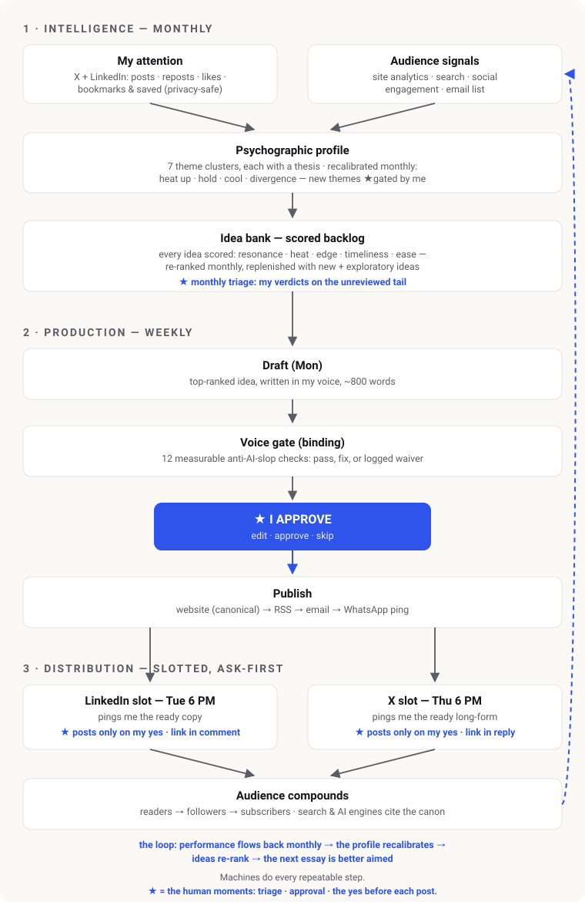

Personal website + self-publishing system
A minimalist personal site that also runs itself: it publishes, monitors, and drafts writing on its own, with a human approval gate at every step.
Context
I wanted a single, fast, minimalist destination that introduces me professionally and links my social profiles, and that could grow over time without manual upkeep. The goal was less “a website” and more “a system”: a page is a noun, but what I actually needed was a verb, something that keeps working after I walk away.
What I did
- Benchmarked best-in-class minimalist sites and shipped a fast static site on free, durable hosting with automatic HTTPS, version-controlled so publishing is a simple push.
- Wrapped the site in approval-gated automations: a flow that turns finished projects into published summaries, and a daily uptime check backed by an always-on external monitor.
- Built a writing engine that learned my voice and proposes pieces on a weekly rhythm, plus a measurable quality standard that screens every draft for machine-sounding writing — binding: a draft ships clean or with each flag explicitly waived.
- Added a distribution layer that reshapes an approved piece into platform-native formats, posted through fixed weekly slots that ask me first, every time.
- Closed the loop (v2): audience data flows back monthly, recalibrates a profile of what I care about, re-ranks a scored idea bank, and aims the next essay better — with three human moments preserved: a monthly triage, the essay approval, and the yes before each post.

Outcome
- A live, mobile-first site that maintains itself and compounds: each project and article adds to it with almost no manual effort.
- A closed feedback loop: what readers respond to reshapes what gets written next, automatically, every month.
- Human approval gates over everything public, so nothing ships under my name that I haven’t signed off.
- Fully documented and open-source, with a complete write-up in the repository.